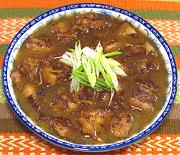

|
Pork with Ginger & VinegarTibet | ||||
| Serves: Effort: Sched: DoAhead: |
2 w/rice ** 1-1/4 hrs Yes |
A very flavorful Meaty Stew - the pattern recipe is by an Australian TV chef of Chinese descent, but I'm accepting it as sufficiently Tibetan - see Comments. | |||
|
1-1/4 ------ 3 1 1 1/4 ------ 1/4 2 3 3 2 1 1 ------ 2 |
# --- in t t c --- c t c T T t --- T |
Pork Belly -- Marinade Ginger root Cornstarch Salt Rice Wine (1) -- Broth Rice Wine Brown Sugar Star Anise Water Vinegar, black (2) Soy Sauce Soy Sauce, Dark ----------- Oil |
PREP - (45 min (10 min work))
|